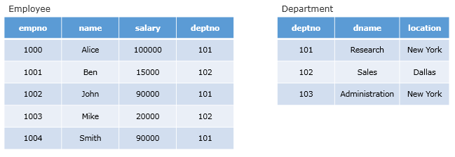

Inner query returns one or more rows to the outer query.
Consider the following Employee and Department tables. We want to fetch the empno and name of those employees whose department is located at New York.

A sub-query for the stated requirement can be written as follows:
Food for thought: Here we are solving it using independent sub query. Can we get it done using join as well?
Sub Queries in Oracle:
https://www.youtube.com/watch?v=9CpjRqHSMVY
(Duration 1:25)
Single and Multiple Row Sub Queries:
https://www.youtube.com/watch?v=dn_WbkdrYtg
(Duration 14:57)